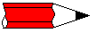

|
|
| Elliott Sound Products | Reactance - Capacitive & Inductive |
Rod Elliott (Elliott Sound Products)
Page Created and Copyright © 05 February 2012
 Main Index
Main IndexFurther to the article about active power factor correction (see PFC), it is worthwhile to look at the effects of capacitive and inductive reactance. Much of what you will read here doesn't appear to make any sense whatsoever, but it is all completely real. Combinations of inductance and capacitance can have decidedly unexpected consequences.
There is some brief discussion of harmonic currents in the PFC article for example, but not the how and why of how they can cause so much disruption to the supply grid. This article will attempt to provide some answers, but naturally cannot cover every possibility. It has to be considered that on something as complex and widespread as the electrical supply network (the 'grid'), the likelihood of something unexpected happening is not a matter of 'if', but 'when'.
Again, so-called 'power savers' that consist of a capacitor that's permanently connected to the mains, are likely to cause problems. Probably not for the grid itself as it's so large, but there is a real risk to household wiring is one of these silly frauds is installed. To refresh you memory, these fraudulent devices are discussed here if you want more info.
It's important to understand that there are no ideal components. Resistors (or power lines) have resistance, capacitance and inductance, capacitors have resistance and inductance as well as the wanted capacitance, and inductors also have resistance, capacitance and inductance. Of these, small resistors are close to ideal, but those encountered in infrastructure of the large scale of the electricity supply network are far from ideal.
Capacitors (as used for power factor correction and filtering applications) are far closer to being an 'ideal' component than inductors or distributed resistance (as opposed to an actual resistor which is very close to ideal at power frequencies), however parasitic capacitance (between adjacent power lines for example) is always a mixture of the three basic 'components', and unless you have a great deal more information than anyone will normally allow you to have, accurate modelling of even a small section of the grid is not possible.
Note that all examples use 50Hz, 230V mains. For those in the US and Canada, you can re-calculate easily for 60Hz, 120V.
|  | Please be aware that the demonstration circuits shown on this page may have 'unexpected consequences' that can cause component failure, extremely high voltages or currents, and can pose the very real risk of electrocution - meaning your earthly activities could be curtailed permanently. This is not a joke! Never connect any of these circuits to the mains, other than via a low voltage winding from a transformer (12V or so), and be aware that some combinations (especially series resonance) may still try to kill you, even with a 12V input. Also, be aware that if a capacitor is disconnected at the peak of the voltage waveform, it will store the charge and may have a terminal voltage of up to 325V (230V mains) or 170V (120V mains). The stored charge is more than sufficient to give a very nasty electric shock, and is capable of causing death. |
Capacitive reactance is covered first - not because it's the most common on the supply grid, but because it's better known in electronic circuits. As noted above, other than resistors, capacitors are also closest to being an ideal component. While much of this article assumes that all components are ideal, it must be understood that this is not the case in reality.
When an ideal capacitor is connected in parallel with the mains, a current is drawn from the supply. The reactance of a capacitor (XC - capacitive reactance) is determined by ...
XC = 1 / ( 2 * π * f * C )
Where XC is capacitive reactance, f is frequency in Hz, and C is capacitance in Farads
Predictably, as capacitance increases, XC falls, and more current is drawn. For the examples here, the capacitance used will be close to 100uF (the actual value is 99.472uF for reasons that will become clear later). Using the above formula, we can determine that ...
XC = 1 / ( 2 * π * 50 * 99.472E-6 )
XC = 32 Ohms
This value can be used to determine the current drawn from the mains. If the cap were connected direct to the mains, the current will be 7.1875A, giving 1,653kVA. However (and this is the strange part), the power is zero. Not a Watt. In reality, there will be a very small amount of power used, due to the cap's internal resistance and dielectric losses. The plates of the cap are metal (usually aluminium), and almost always very thin. In some cases, the 'plates' are no more than a few molecules thick, vacuum deposited onto the dielectric material. The dielectric is the insulation between the capacitor's plates, and may be various types of plastic, or less commonly now, paper in oil. I tested a 12uF 330V power factor correction capacitor, and it drew 902mA at 239V AC (as expected), yet dissipated only 30mW - much of which would have been in the connecting cable!
Needless to say, these relationships remain as the capacitance or frequency is changed, and as the frequency is increased, capacitor current rises. This is a linear relationship that covers a very wide frequency range, from fractions of 1Hz up to perhaps 100kHz or so (depending on the capacitor's construction and physical size). At higher frequencies, even the wires leading to the cap become an issue, due to their inductance.
Here we see the relationship between the voltage and current (ignore the resistance for the time being). The current is 90° out of phase, and actually leads (comes before) the voltage. While this might seem impossible, it is very real, but refers to 'steady state' conditions that require a few cycles of AC to become stable. This is known as a leading power factor.
Now we can apply some people's favourite formula for power factor (even though it really shouldn't be used). Power factor = Cosφ, and the cosine of 90 is ... zero. No power, and also a power factor of zero. No work is performed, so all energy fed into the capacitor is fed back into the mains. The correct way to determine power factor is to divide real power (Watts) by 'apparent power' (VA). Apparent power is sometimes referred to as 'imaginary' power (but strictly speaking only for reactive loads), because it has a negative component - real power can never be negative.
This is capacitive reactance from a theoretical perspective, but the reality is not too different! Because capacitors are fairly close to being an ideal part at low frequencies, the losses will be tiny. Based on tests with smaller mains rated caps, the actual power is likely to be less than a watt, dissipated within the cap and its lead wires as heat.
For practical reasons (due in part to the simulator's belief in perfect components), there is a 1 ohm resistor in series with the capacitor. This dissipates ~51.7W of real power, and because it's there the phase angle is a little bit less than 90° (88.22°). The VA rating is simply 230V * 7.1875A (1653VA) and the power factor is 0.031 - not quite zero. Note that any resistance in a reactive circuit always dissipates 'real' power - there is no 'apparent power' component.
In many scientific journals and the like, you will see the impedances in a circuit such as that shown above referred to as 1 + j32. One ohm of real resistance, and 32 ohms of capacitive reactance. The 'j32' means that the 32 ohm part of the circuit is reactive, and these two numbers cannot simply be added (the answer isn't 33 ohms). It's outside the scope of this article to try to explain j-notation and/or complex maths, but the two can be added thus ...
1 + j32 = √1² + 32²
= 32.016 ohms
This explains why the current is not 6.97A as you might have imagined, but is somewhat greater. The power in the resistor is simple ...
P = I² * R
P = 7.1875² * 1 = 51.66 Watts
So far, the example is fairly straightforward, as is the next section - inductance.
The circuit is virtually the same, except the capacitor is replaced by an inductor. The inductor is also sized so its reactance is 32 ohms, which makes the value 101.859mH.
XL = 2 * π * f * L
Where XL is inductive reactance, f is frequency in Hz, and L is inductance in Henrys
Exactly opposite a capacitor, as inductance decreases, XL falls, and more current is drawn. For this set of examples, the inductance used is close to 100mH. Using the above formula, we can determine that ...
XL = 2 * π * 50 * 101.859E-3 )
XL = 32 Ohms
Looking at the current and voltage waveforms, we see much the same as before, except the current is now lagging the voltage. This is known as a lagging power factor. Unlike capacitors, real inductors are never as good as the simulated ideal, because they are wound with copper wire, and have resistance. There are also magnetising and other losses, because practical inductors need a laminated silicon steel core, just like a transformer. They are also prone to saturation if the current through the inductor becomes too high.
In short, inductors are one of the worst electrical (or electronic) components. Stray capacitance means they have a self-resonant frequency that's often at a surprisingly low frequency (a few 10s of kHz perhaps), and the inherent resistance and magnetising losses mean that even modest inductors (such as those used for fluorescent lamp ballasts) can dissipate (waste) a significant amount of energy.
As before, there is a 1 ohm resistor used to keep the simulator happy. Current and voltage are exactly the same as for the capacitive example, but the current is now lagging, rather than leading. Otherwise, it behaves in the same way, has the same (very poor) power factor and the resistor dissipates the same power.
Essentially everything said about the capacitive circuit applies here, except that in a real circuit the inductor will have significant losses, easily equalling the power dissipated in the resistor, and that would be for a rather large and expensive part. For the time being, the 'ideal' (though unattainable) part is the best way to show the effects.
When the two circuits are combined, that's when things get interesting. We end up with a seemingly impossible situation, as is seen in the next section.
Now things start to look just plain silly. We have exactly the same two circuits as before, both connected to the same (ideal) power supply, and each independently doing exactly as it did before. When the two are combined, the current from the mains falls, and not by a small amount either.
Remember, these are the same two circuits we saw before, with the only difference being that they are on the same circuit. The total mains current is measured at 456.53mA - a fraction of what each reactance demands. The power in each resistor is unchanged, except that there are two resistors.
If we calculate the total resistor power to be twice that of one resistor, we get a total power of 103.32 Watts. If we now calculate the VA from the generator, we get 230 * 456.53mA = 105 Watts. Yes, there is a small error, which is due to the limited number of digits used in these examples. In reality, the power is exactly as we determined by adding the resistor power together - 103.32 Watts.
You can see in the graph that the capacitor current leads the voltage, and the inductor current lags by the same amount (this is the reason for the slightly odd values - to get exactly complementary behaviour). The capacitive and inductive currents are just as they were before ... 7.1875A in each. Because one leads and the other lags, as far as the mains supply is concerned, they cancel out. Adding the capacitor doesn't reduce the current in the inductor though (or vice versa) - this is one of the many false claims of the fraudulent 'power savers' that are advertised everywhere. Since the current in the inductor remains the same, any losses that cause internal heating also stay the same.
The only part of the circuit that benefits is the cable from the source (the mains outlet) to the equipment ... provided the two loads are close together of course. As is common with all power factor correction systems, the correction device (most commonly a capacitor) is mounted in or on the light fitting or motor that is being corrected. This minimises wiring losses in the premises.
When reactances are combined, at their resonant frequency they are always resistive - voltage and current are in phase. For parallel circuits, below resonance the combination appears inductive (lagging PF), and above resonance it is capacitive (leading PF). Reactances in series are also in phase (and therefore resistive), but below resonance the combination appears capacitive, and above resonance it's inductive.
Somewhat predictably, there are more ways the inductance and capacitance can be interconnected, and these are discussed below.
Combinations of inductors and capacitors are quite common in electronics, and form the basis of many tuned circuits. In radio frequency applications, LC (inductor/ capacitor) networks are everywhere, because they form the filters that define the bandwidth that the application requires. Modern techniques have eliminated many of the tuned circuits you see in older equipment, but there are simple combinations that refuse to go away and will do so for the foreseeable future.
One of these is the parallel resonant circuit, shown below. The inductor and capacitor are wired in parallel, and the combination is in series with the load resistor. This is a combination that some will know instantly.
The parallel resonant circuit has (in theory) infinite impedance at its resonant frequency - 50Hz in this case. In reality, the impedance is always decidedly finite, because natural losses degrade the performance of the circuit. Suffice to say that the impedance of any resonant circuit is extremely high at its resonant frequency. In the circuit shown, with its ideal components, the impedance is close to infinite, but the current that circulates around between the coil and the capacitor is still much higher than you ever expected. In fact, it's slightly higher than each of the circuits in isolation. The simulator tells me that the circulating current is 7.18A.
The losses determine the circuit's 'Q' (quality factor), and this is a way of describing the sharpness of the circuit's frequency response. A high Q circuit will only be effective over a very narrow frequency range, where a low Q circuit will have a flatter overall response, and a wider frequency range. The frequency response of the circuit is essential here ... the following shows the voltage across the 1 ohm resistor with varying frequency.
The voltage across the 1 ohm resistor falls to a minimum at resonance - 50Hz. If you recall, I mentioned at the beginning that caps and inductors had rather odd values, and that's because they are the values needed to obtain resonance at 50Hz. There are other combinations that will work too, but any resonant circuit is at its best when the impedances of the capacitive and inductive sections are equal, however resonance doesn't require equal impedances ... an important thing to remember as we go further.
We can calculate the resonant frequency of any combination of inductance and capacitance with the formula ...
fo = 1 / ( 2 * π * √L * C ), so for our example ...
fo = 1 / ( 2 * π * √0.1 * 100E-6 ) ... close enough
fo = 50.329 Hz
Note that there is actually a very small difference between the formulae for series and parallel resonant circuits,
but this has not been considered here, as there is no difference with ideal components.
You can also see again the reason for the slight changes to the values of inductance and capacitance - I wanted a frequency of 50Hz - exactly. The Q of the circuit shown (with its ideal components) is over 800, and the bandwidth (at the +3dB points from minimum voltage) is only 62mHz (0.062Hz). It goes without saying that this will not be achieved in practice.
In the formula shown above, it is obvious that any combination of L and C that gives the same number when multiplied together will give the same resonant frequency. 10H and 1uF will also resonate at 50.329Hz, as will countless other combinations. This is an important point to remember when we look at 'unintended consequences'.
This is a combination that requires enormous care. If you get the tuned circuit just right (or wrong!), the inductor and capacitor cancel each other, leaving you with a short circuit across the mains. Meanwhile, the voltage across each (L and C) will be huge - it's quite easy to get many kV across each component of a series resonant circuit, and the resistor has been increased to 33 ohms. It will still dissipate just over 1.6kW, because for all intents and purposes, it's directly across the mains - the inductor and capacitor effectively disappear at resonance.
It is only the resistance of a real inductor that will limit the current (and the ultimate voltage across L and C) if there is nothing else in series, and the circuit shown above only has a fairly conservative 222V across each of the reactances. The voltage across L and C are exactly equal and opposite at resonance, so they cancel completely - regardless of the actual voltage, be it millivolts or kilovolts.
The Q of the circuit is determined by the amount of series resistance - the response curve shown above is with the 33 ohm resistor in place. If the resistance is reduced, the Q increases, as does the voltage across the L and C components.
As an example, if the resistance is reduced from 33 ohms to 10 ohms, the current rises to 22.98A (ideally it would be 23A), but the voltage across the cap and inductor increases to 735V (RMS). Even though 'real' inductors have all the losses described above, the same thing can happen as described here. The only difference is that the voltages and currents will not be quite so high, but it's still easy to create a circuit that will blow fuses (and/or circuit breakers), destroy capacitors and/or inductors (etc.) due to over-voltage ... or worse, kill you.
Getting 500-600V is dead easy, just connect a capacitor in series with a shaded pole motor. If you get the cap value right, the motor will slow down (this is a common way to implement a cheap speed control), but if it's wrong you can end up with 500V across a 230V motor ... I know this from personal experience! Fortunately, I realised what had happened immediately, but if you are unaware of the effect it's very easy to get caught out. The results could be lethal.
| If you do have a burning (no pun intended) desire to experiment, you must do so from a low voltage source ... 12V AC is suggested. Even then, there is the possibility of lethal voltage being created with a high Q resonant circuit. This is a dangerous combination, and requires both skill and respect. ESP can accept no responsibility in the event of injury or death - you perform these experiments entirely at your own risk. |
Now that we've looked at the effects of resonance, it should be apparent that within the electrical distribution network, there will be a vast number of combinations of inductance and capacitance. Resistance is distributed, and some of the LC combinations will be heavily damped by intervening resistance, while others won't.
What we haven't considered yet is the harmonics of the mains. Harmonics are created by any non-linear load, ranging from switchmode power supplies to lamp dimmers (leading and trailing edge types). It is unusual (and highly undesirable) for the mains to contain even harmonics, as these create an asymmetrical waveform that has a DC component. This is capable of extreme harm, however there are innumerable transient DC events on the mains. Provided there is some resistance between the source of DC events and the equipment that will be affected by them, the risk of damage is small. If they are close by, the results can be extreme. This topic is described elsewhere (see Inrush Current for more on that subject.
Given that harmonics are a fact of life when a waveform is distorted (and it's mainly the current waveform - the voltage waveform is affected, but it's difficult to change the waveform significantly when the source is an extremely low impedance. If the source impedance were zero ohms, no amount of current waveform distortion could affect the voltage waveform, but naturally this is not possible.
The harmonics that are most at risk of causing problems extend up to the 39th (sometimes more), and these are often measured as part of equipment compliance testing. Older equipment (and that can easily mean 40 years old or more) is not subject to current compliance testing, and can do almost anything by way of harmonic generation. The effects are simply not known unless someone decides to run tests.
The harmonic frequencies depend on the mains frequency, but are as follows (I'm only covering up to the 19th harmonic so the table doesn't get silly).
| Mains | 3rd | 5th | 7th | 9th | 11th | 13th | 15th | 17th | 19th |
|---|---|---|---|---|---|---|---|---|---|
| 50 Hz | 150 Hz | 250 Hz | 350 Hz | 450 Hz | 550 Hz | 650 Hz | 750 Hz | 850 Hz | 950 Hz |
| 60 Hz | 180 Hz | 300 Hz | 420 Hz | 540 Hz | 660 Hz | 780 Hz | 900 Hz | 1020 Hz | 1140 Hz |
When you consider the number of devices that may be connected to the grid at any one time, it's almost guaranteed that one or more harmonic frequencies will react with an inductive load here and a capacitor there. It doesn't matter if the capacitor is already doing its normal job somewhere else - electricity is multi-tasking, and many different things can happen at once.
Commercial premises may have a dedicated power factor correction (PFC) system, using switchable capacitors and series inductors designed to minimise harmonic current within the system. These are usually designed so that the natural resonance of the inductor and capacitor does not coincide with any likely harmonic, but since the power distribution system itself is made with cables, these also have inductance, and that can skew the resonant frequency of a PFC cabinet. Now you can start to appreciate the enormous complexity of the problem, especially when we examine the harmonic content of a common light dimmer set to half power. This is only an example - many loads are actually far worse.
The above shows the current waveform, with a standard leading edge dimmer operated at 50%, supplied from 230V into a 100 ohm load. A trailing edge dimmer has identical harmonic amplitudes, but they are shifted in phase. The RMS current is 1.61A, and the waveform has 64% THD (total harmonic distortion). As you can see, the harmonics extend to well over 3kHz, but below 1kHz they are all greater than 100mA, and the 3rd harmonic is more than half the level of the fundamental (50Hz). They measure 1.62A and 878mA respectively, and even the 5th and 7thharmonics are almost 300mA each.
A typical twin building wire may have an inductance of around 0.65uH/ metre. Wire runs in a building can easily exceed 100 metres, so such a cable has an inductance of perhaps 65uH. This isn't very much, but what about the 10s of kilometres of wire between the power station and the connected premises? The simple answer is that we don't know, but these distributed inductances and associated capacitances all form low Q resonant circuits at some frequency. There is no way that it would be possible to ensure that resonant frequencies never coincide with a harmonic of the mains frequency, plus there are the countless appliances ... some generating harmonics, many with power factor correction capacitors, and some where we have no idea what kind of load they present.
Then there are power factor correction cabinets in large installations and at substations, and every capacitor presents a low impedance to harmonic current. A cap that has an impedance of (say) 100 ohms at 50Hz has an impedance of only 33 ohms at 150Hz (3rd harmonic), and 20 ohms at 250Hz (5th harmonic). As the frequency increases, the ability of a capacitor to cause large harmonic currents within the grid also increases. Should the current be high enough, the capacitor will eventually fail because its maximum current rating will be exceeded.
The harmonic currents also affect motors and transformers, and because of the higher frequency of these harmonics, they can (and do) cause additional heating. The extra heating is partly due to eddy current losses in the laminated steel cores used, and is also due to something called the 'proximity effect'. To some extent, this is similar to skin effect, but is applied to conductors immersed in a magnetic field [1, 2]).
The proximity effect causes often chaotic disturbance of the normal flow of electrons in a wire coil, and can significantly reduce the current-carrying capacity of the conductors. In turn, this causes the temperature of the machine (motor, transformer, etc.) to increase, often with localised 'spot' temperature rises that are far greater than expected. This has caused many failures. All this just because of a few harmonics on the mains! Large harmonic currents can also cause transformers and motors to be excessively (and unexpectedly) noisy.
Next, imagine that you find a situation where a power factor correction cap forms a series resonant circuit with cable and transformer leakage inductance. Any harmonic at the resonant frequency can potentially cause very high and possibly destructive current to flow in the circuit, and there is a high probability of something in the circuit failing. This does happen, and every power utility will have suffered failures caused by excessive harmonic currents. PFC capacitor cabinets can suffer nuisance tripping of series circuit breakers designed to protect the cap against excess current. It's common to include low-Q inductors in series as well, to limit the high frequency current.
None of this is particularly intuitive, and is not the kind of thing that any electrician considers when wiring a building. In the past, there were so few loads that created severely non-linear waveforms that it was never an issue. With the proliferation of electronic lighting systems (for example), this has changed. The general idea is shown in Figure 9, using the same dimmer as described above. The ammeter in this case will be an oscilloscope current probe, and the harmonic levels can then be determined by using FFT (fast Fourier transform).
The test circuit shows the building wiring, and can be considered to be reasonably typical of a real installation. The current is only monitored directly from the generator, and without the capacitor is's much the same as shown above in Figure 8. The harmonics are greatest at low frequencies, and diminish progressively with increasing frequency.
When the capacitor is added things change rather interestingly. The 'cap' might be (say) three 3.3uF power factor caps installed in fluorescent light fittings for example, and when installed, it's clearly visible on the red trace that instead of harmonic currents declining in a natural progression, there is a peak at 1550Hz (the 31st harmonic). The harmonic current from the mains has increased because the capacitor was installed. The current in the capacitor also increases, from 723mA with a clean 230V supply to 922mA when the harmonics are present - more than 20% greater.
As noted earlier, there are likely to be many such interactions within a single installation, and these become innumerable when the distribution grid as a whole is considered. The example shown is deliberately simplistic, but shows clearly that the likelihood of 'unintended consequences' is very high. The only issue is not whether such interactions occur, but whether they are likely to cause greater problems elsewhere within the distribution network when they do occur.
The only real solution is to eliminate (insofar as is possible) non-linear loads and subsequent harmonic generation at the source, and this is one of the reasons that so many electronic products are now required to maximise power factor and keep distortion low. There is evidence that 'distributed generation' from household solar installations and the like also causes problems. While they don't directly affect the overall power factor by themselves, the PF from the grid is lowered because of the reduction of normal (high power factor) load which is supplied by the inverters [4]. For residential premises, their load has always been considered to be benign, with a PF close to unity. This is no longer the case, partly due to the proliferation of CFLs, PC power supplies, LCD/ plasma TV sets and many other electronic load appliances. These often have a very poor power factor, and it's non-linear so cannot be corrected by normal means.
Ultimately, all forms of poor power factor cause additional losses within the supply grid, because current is increased with no increase in 'work' or real power at the destinations. There may be many kilometres of wire between any one destination and the closest major substation, with perhaps a smaller substation in between. Between the major substation and the generating facility can easily be 50km or more (it can be a great deal more in a country like Australia). Included in the distribution system is always at least two and more likely 3 or 4 transformers - all wound with wire and already running close to capacity in many cases.
There have been several very high profile cases where power feeds into major cities have failed, causing widespread blackouts and chaos - Sydney (AU) is one that springs to mind because it was all over the news here. A web search reveals that there have been countless outages all over the world, just in the past year. While some were the direct result of natural disasters of one kind or another, many of these failures were almost certainly the result of overload, probably helped a little by a lack of proper maintenance.
The current increase caused by poor power factor is insidious, and applies to loads with a conventional lagging (or leading) power factor, as well as non-linear loads. If a building's load has a power factor of 0.5 (leading, lagging or non-linear), it demands twice as much current from the grid. Wiring losses are directly proportional to the square of the current ( P = I² * R ), so if the current demanded by an installation draws double the current needed because of a poor power factor, then the distribution losses are 4 times greater than would be the case with a PF of unity.
Even a small reduction of current can reduce losses by a very worthwhile amount. A 10% reduction of current results in more than a 17% reduction of resistive distribution losses. Long-distance high-voltage AC transmission systems also suffer from capacitive and inductive losses, and in some cases it's actually more efficient to convert the AC to DC, then back again at the remote end. This is commonly used for long underwater transmission, where the capacitance between cables would otherwise cause major losses.
All wiring and transformer losses are real power that must be provided by the generating station(s), and real fuel must be burned to provide it. Since grid power losses are commonly much higher than imagined (accurate figures for this seem to be a closely guarded secret), a poor power factor causes the cost of supply to increase, and reduces the capacity of the grid as a whole. Depending on where you look, transmission and distribution losses seem to be between 6% and 10%. That's a huge amount of energy worldwide. For anyone interested in some startling figures, see Energy Efficiency in the Power Grid, a paper prepared by ABB Inc.
A good indicator of the amount of distortion caused to the mains waveform is shown in Figure 12. The load is a conventional rectifier, followed by a filter capacitor, and drawing a non-linear current of just over 2A RMS as shown above. The peak current is 6.7A, and causes the voltage waveform to get flat tops on the positive and negative peaks [5].
The circuit draws just under 473VA, but actual power is only 253W, so power factor is 0.53 - almost half the current drawn from the mains is effectively wasted because of the dreadful current waveform. It's not at all intuitive how this comes about, but essentially the maths behind it don't really matter. What does matter is that this is a known problem, and it can be fixed with clever integrated circuits and modern electronic techniques - all of which exist right now.
Back in the 1960s and before, there were very few loads that caused serious harmonic distortion of the current waveform. The majority of non-linear loads at that time would have been things like 3-phase mercury arc rectifiers to supply electric train and tram feeders, but in most cases these could be expected to be isolated from the general mains network. While it's outside the scope of this article to extend into a discussion of 3-phase rectifiers, they are anything but grid-friendly, regardless of the rectifier diodes used. There are techniques that reduce the problem, but it's not eliminated.
The allowance for the grid and building cabling in Figure 11 is very conservative - in most cases they are likely to have somewhat greater losses. Even so (and with the comparatively tiny load), the 0.8 ohm wiring resistance dissipates 3.38W instead of 1.03W with a linear load of the same power - over 3 times the losses! While this might seem insignificant by itself, it's a different story when multiplied by thousands of similarly poor loads. If a power station were supplying 500MVA [5] into the grid loaded with similar circuits, only 265MW is available to do useful work. The network losses will reduce that even further, because the heat generated in cables and transformers is part of the work performed. This is why power utilities really don't like bad power factors, regardless of what causes them.
The voltage waveform shows another problem. In most previous examples, the generator (alternator) is assumed to have a zero ohm output impedance, and produce a pure sinewave. The voltage waveform would therefore have no distortion at all.
It doesn't take a great deal of resistance in the wiring before the 'flat-topping' becomes very noticeable. The effect is clearly visible above, and is the simple result of Ohm's law (the small inductance has little effect). It's not at all uncommon to measure the mains voltage distortion at 10% or more, depending on the time of day and the loads connected. Transmission resistance in transformers, cables, etc. is a fact of life, so when we have a circuit that draws very high peak currents, even a small utility resistance will allow the voltage waveform to become distorted. Now we are faced with the dual problems of a distorted voltage, as well as distortion of the current waveform.
Just in case you were wondering about the relevance of this example, it's worth noting that you only need about 10 x 25W CFLs (or you and a few neighbours with a total of 25 x 10W CFLs) to cause exactly the scenario shown above. A single PC power supply can do the same thing if it has no PFC circuits. Any examination of the mains waveform will show the effect very clearly.
This is one of the most complex areas we have to confront, and it has been exacerbated by the phase-out or ban of incandescent lamps. These have a perfect power factor (unity - at least when no dimmer is used), with no harmonics. They never caused any problems to the electrical supply. The large scale use of CFLs has been a contributor, but more and more modern appliances use electronic power supplies that also create more than their fair share of problems. Lighting is of particular concern, because it is one of the most important uses of electricity, and has been rudely thrust into the limelight because of the initial (seemingly simple) requirement for higher efficiency. This is called an 'unintended consequence'!
One answer is to ensure that all new power supplies have active power factor correction, so the generation of harmonics is minimised. However, this comes with an increased cost to the consumer and means more complex power supplies with more things to go wrong. This is also called an 'unintended consequence'. More and more regulations are being introduced to limit the waveform distortion of new products, with lighting being one of the main targets. Common (cheap) CFLs currently seem to be exempt, even though they are cause exactly the issues demonstrated by the Figure 11 circuit. There is little that can be done about legacy devices and equipment that may have been in use for 20 years or more, but it is important to ensure that the problems aren't made any worse than they already are.
As noted in the introduction, this article should be read in conjunction with Active Power Factor Correction, because the two are inextricably intertwined.
For those who are interested, there are papers presented by supply authorities from all over the world. These range from being overly simplistic to fully-blown engineering analysis. Those roughly in the middle are the most useful for anyone who just wants to understand the problems faced and the reasons for those problems. As noted in the third and fourth references, even grid-tied inverters (from solar panels or potentially small wind turbines) cause their fair share of problems - even if they produce a very clean waveform to the grid. This is difficult to understand without extensive analysis, but fortunately that's already been done ... many times.
Main Index| Copyright Notice. This material, including but not limited to all text and diagrams, is the intellectual property of Rod Elliott, and is Copyright © 2012. Reproduction or re-publication by any means whatsoever, whether electronic, mechanical or electro-mechanical, is strictly prohibited under International Copyright laws. The author (Rod Elliott) grants the reader the right to use this information for personal use only, and further allows that one (1) copy may be made for reference. Commercial use in whole or in part is prohibited without express written authorisation from Rod Elliott. |